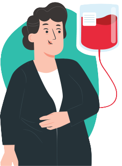

Outros requisitos para doação

Estar alimentado. Evite alimentos gordurosos nas 3 horas que antecedem a doação de sangue.
Caso seja após o almoço, aguardar 2 horas.
Ter dormido pelo menos 6 horas nas últimas 24 horas.
Gripe, resfriado e febre: aguardar 7 dias após o desaparecimento dos sintomas;
Período pós-gravidez: 90 dias para parto normal e 180 dias para cesariana;
Ingestão de bebida alcoólica nas 12 horas que antecedem a doação;
Extração dentária: 72 horas;
Apendicite, hérnia, amigdalectomia, varizes: 3 meses;
Vacinação: o tempo de impedimento varia de acordo com o tipo de vacina;
Exames/procedimentos com utilização de endoscópio nos últimos 6 meses;
A frequência máxima é de quatro doações de sangue anuais para o homem e de três doações de sangue anuais para as mulher.
O intervalo mínimo para os homens é de dois meses e de três meses para as mulheres.